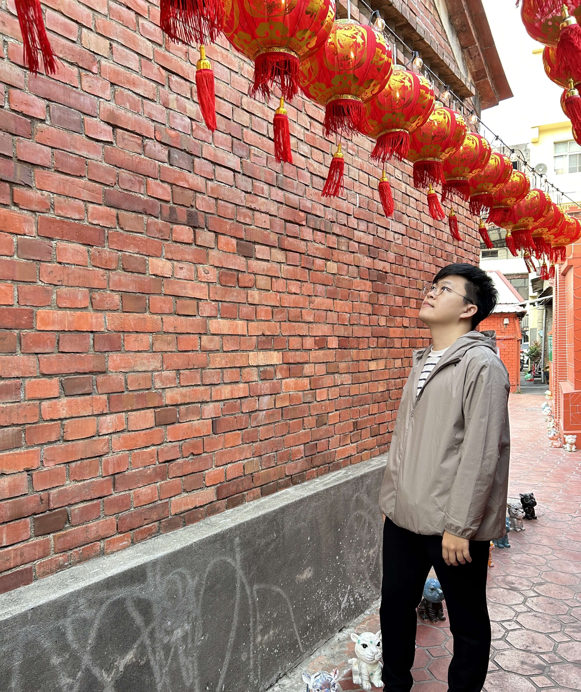

嗨，我是 Matt Chiang
AI 應用開發工程師，現任職於雲林台大醫院，專注於 LLM 平台建置、 OCR／LLM 文件處理、自動化系統開發與 Docker 地端模型部署。 擅長使用 Python 整合 API、資料庫與 AI 模型，將生成式 AI 技術 落地為可實際使用與管理的應用系統。
查看我的履歷關於我
我具備資料分析、後端開發與生成式 AI 應用整合經驗， 目前主要負責企業內部 LLM 服務平台與 AI API 系統建置， 包含模型部署、Reverse Proxy、OCR 文件處理流程、 API 管理、自動化工具開發以及 Docker 地端服務管理。
我擅長使用 Python 進行資料處理與系統開發， 並將 LLM、OCR、資料庫與 RESTful API 整合進實際業務流程。 除了 AI 應用外，也具備 Web 開發、Git 版本控制、 CI/CD 與 Linux 服務管理經驗。
我持續關注生成式 AI、RAG、Agent Workflow 與模型部署技術， 希望透過穩定且可維運的系統架構， 讓 AI 技術真正落地到實際工作場景中。
| 自我簡介 |
我是一名 AI 應用開發工程師，
專注於生成式 AI、後端系統整合與自動化流程開發。
目前於台大醫院負責 LLM 服務平台建置、
API 管理、OCR／LLM 文件處理流程、
Docker 地端模型部署與 AI 應用整合。
我擅長使用 Python 進行資料處理與系統開發， 並整合 OCR、LLM、資料庫與 RESTful API， 將 AI 技術實際導入業務流程中。 同時也具備 Linux 服務管理、Reverse Proxy、 Docker、Git 與 CI/CD 經驗， 能夠獨立完成從開發、部署到維運的完整流程。 |
| 學歷 | 國立虎尾科技大學 資訊管理研究所 |
| 經歷 |
|
| 語言 |
|
| 核心專長 | Python、RESTful API、LLM Application、 OCR 文件處理、Docker 部署、Linux Server、 Reverse Proxy、資料處理與整合、 Git / CI/CD、Machine Learning |
| 開發經驗 |
在 AI 應用開發方面，
我主要負責企業內部生成式 AI 系統與服務平台建置，
包含 LLM API 服務管理、模型地端部署、
OCR 文件辨識、自動化資料處理流程以及 AI 工具整合。
我曾實作與維護多種 LLM 應用流程， 包括 RAG 架構、文件問答、Prompt Workflow、 LangChain 整合與 API 化服務， 並使用 Docker 建立可重複部署的 AI 環境。 在系統架構方面， 熟悉 Linux Server 管理、Nginx Reverse Proxy、 Git 版本控制與 CI/CD 流程， 能夠處理從開發到正式環境部署的完整流程。 此外，我也具備前端與網頁開發經驗， 曾開發旅遊網站與圍棋資訊網站， 包含 UI/UX 設計、HTML、CSS、JavaScript 與前端頁面整合。 |
